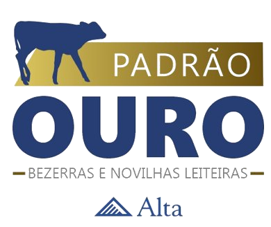

Pular para o capítulo

Modo de leitura
4ª edição · 2026
Início
Leitura
Autores
Baixar e-book
Sumário
Instalar
Capítulo 07 · 4ª edição
Biosseguridade
Prevenção, limpeza e controle de risco
Capítulo 07 · Biosseguridade
Nenhum trecho encontrado neste capítulo.